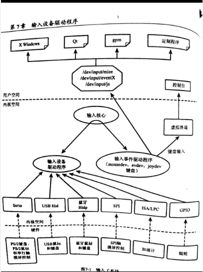

input子系统框架图
1.input-core 输入核心
2.input-event-dev 输入事件驱动程序
3.input-driver 输入设备驱动程序
如何理解：
输入事件是标准的，对于所有输入设备都应该是可以用的，要实现的是输入设备驱动程序。输入设备驱动程序可以选择合适的输入事件驱动程序，通过输入核心以及输入事件驱动程序，向用户层输入数据
通俗讲解：
输入核心：输入核心提供了注册设备驱动以及事件驱动的API，维护着事件驱动的链表以及设备驱动的链表
设备驱动 对应input_dev 负责实际的设备数据读取，通过input core 将数据传递到事件驱动程序，上报给用户层
事件驱动，对应input_handler，负责创建设备节点，负责和应用层进行数据交互以及上报
设备驱动与事件驱动通过id_table进行match，match之后通过connect函数创建事件驱动，事件驱动负责创建设备节点，提供open，close 等文件操作函数包括/dev/input/eventX,或者mouse等，然后通过input_handle进行绑定。维护着client（上层用户）的链表，将数据传递给用户层以及每一个打开文件的client
相关的目录:drivers/input
相关的文件:input.c,evdev.c,input-polldev.c mousedev.c linux/include/input.h include/uapi/linux/input.h
相关的结构体：
/**
* struct input_value - input value representation
* @type: type of value (EV_KEY, EV_ABS, etc)
* @code: the value code
* @value: the value
*/
struct input_value {
__u16 type;
__u16 code;
__s32 value;
};
注：对于所有的input设备，一般向上层应用输出的都是以上的结构体
/**
* struct input_dev - represents an input device
* @name: name of the device
* @phys: physical path to the device in the system hierarchy
* @uniq: unique identification code for the device (if device has it)
* @id: id of the device (struct input_id)
* @propbit: bitmap of device properties and quirks
* @evbit: bitmap of types of events supported by the device (EV_KEY,
* EV_REL, etc.)
* @keybit: bitmap of keys/buttons this device has
* @relbit: bitmap of relative axes for the device
* @absbit: bitmap of absolute axes for the device
* @mscbit: bitmap of miscellaneous events supported by the device
* @ledbit: bitmap of leds present on the device
* @sndbit: bitmap of sound effects supported by the device
* @ffbit: bitmap of force feedback effects supported by the device
* @swbit: bitmap of switches present on the device
* @hint_events_per_packet: average number of events generated by the
* device in a packet (between EV_SYN/SYN_REPORT events). Used by
* event handlers to estimate size of the buffer needed to hold
* events.
* @keycodemax: size of keycode table
* @keycodesize: size of elements in keycode table
* @keycode: map of scancodes to keycodes for this device
* @getkeycode: optional legacy method to retrieve current keymap.
* @setkeycode: optional method to alter current keymap, used to implement
* sparse keymaps. If not supplied default mechanism will be used.
* The method is being called while holding event_lock and thus must
* not sleep
* @ff: force feedback structure associated with the device if device
* supports force feedback effects
* @repeat_key: stores key code of the last key pressed; used to implement
* software autorepeat
* @timer: timer for software autorepeat
* @rep: current values for autorepeat parameters (delay, rate)
* @mt: pointer to multitouch state
* @absinfo: array of &struct input_absinfo elements holding information
* about absolute axes (current value, min, max, flat, fuzz,
* resolution)
* @key: reflects current state of device's keys/buttons
* @led: reflects current state of device's LEDs
* @snd: reflects current state of sound effects
* @sw: reflects current state of device's switches
* @open: this method is called when the very first user calls
* input_open_device(). The driver must prepare the device
* to start generating events (start polling thread,
* request an IRQ, submit URB, etc.)
* @close: this method is called when the very last user calls
* input_close_device().
* @flush: purges the device. Most commonly used to get rid of force
* feedback effects loaded into the device when disconnecting
* from it
* @event: event handler for events sent _to_ the device, like EV_LED
* or EV_SND. The device is expected to carry out the requested
* action (turn on a LED, play sound, etc.) The call is protected
* by @event_lock and must not sleep
* @grab: input handle that currently has the device grabbed (via
* EVIOCGRAB ioctl). When a handle grabs a device it becomes sole
* recipient for all input events coming from the device
* @event_lock: this spinlock is is taken when input core receives
* and processes a new event for the device (in input_event()).
* Code that accesses and/or modifies parameters of a device
* (such as keymap or absmin, absmax, absfuzz, etc.) after device
* has been registered with input core must take this lock.
* @mutex: serializes calls to open(), close() and flush() methods
* @users: stores number of users (input handlers) that opened this
* device. It is used by input_open_device() and input_close_device()
* to make sure that dev->open() is only called when the first
* user opens device and dev->close() is called when the very
* last user closes the device
* @going_away: marks devices that are in a middle of unregistering and
* causes input_open_device*() fail with -ENODEV.
* @dev: driver model's view of this device
* @h_list: list of input handles associated with the device. When
* accessing the list dev->mutex must be held
* @node: used to place the device onto input_dev_list
* @num_vals: number of values queued in the current frame
* @max_vals: maximum number of values queued in a frame
* @vals: array of values queued in the current frame
* @devres_managed: indicates that devices is managed with devres framework
* and needs not be explicitly unregistered or freed.
*/
struct input_dev {
const char *name;
const char *phys;
const char *uniq;
struct input_id id;
unsigned long propbit[BITS_TO_LONGS(INPUT_PROP_CNT)];
unsigned long evbit[BITS_TO_LONGS(EV_CNT)];
unsigned long keybit[BITS_TO_LONGS(KEY_CNT)];
unsigned long relbit[BITS_TO_LONGS(REL_CNT)];
unsigned long absbit[BITS_TO_LONGS(ABS_CNT)];
unsigned long mscbit[BITS_TO_LONGS(MSC_CNT)];
unsigned long ledbit[BITS_TO_LONGS(LED_CNT)];
unsigned long sndbit[BITS_TO_LONGS(SND_CNT)];
unsigned long ffbit[BITS_TO_LONGS(FF_CNT)];
unsigned long swbit[BITS_TO_LONGS(SW_CNT)];
unsigned int hint_events_per_packet;
unsigned int keycodemax;
unsigned int keycodesize;
void *keycode;
int (*setkeycode)(struct input_dev *dev,
const struct input_keymap_entry *ke,
unsigned int *old_keycode);
int (*getkeycode)(struct input_dev *dev,
struct input_keymap_entry *ke);
struct ff_device *ff;
unsigned int repeat_key;
struct timer_list timer;
int rep[REP_CNT];
struct input_mt *mt;
struct input_absinfo *absinfo;
unsigned long key[BITS_TO_LONGS(KEY_CNT)];
unsigned long led[BITS_TO_LONGS(LED_CNT)];
unsigned long snd[BITS_TO_LONGS(SND_CNT)];
unsigned long sw[BITS_TO_LONGS(SW_CNT)];
int (*open)(struct input_dev *dev);
void (*close)(struct input_dev *dev);
int (*flush)(struct input_dev *dev, struct file *file);
int (*event)(struct input_dev *dev, unsigned int type, unsigned int code, int value);
struct input_handle __rcu *grab;
spinlock_t event_lock;
struct mutex mutex;
unsigned int users;
bool going_away;
struct device dev;
struct list_head h_list;
struct list_head node;
unsigned int num_vals;
unsigned int max_vals;
struct input_value *vals;
bool devres_managed;
};
以上结构体描述的是一个输入设备
struct input_handler {
void *private;
void (*event)(struct input_handle *handle, unsigned int type, unsigned int code, int value);
void (*events)(struct input_handle *handle,
const struct input_value *vals, unsigned int count);
bool (*filter)(struct input_handle *handle, unsigned int type, unsigned int code, int value);
bool (*match)(struct input_handler *handler, struct input_dev *dev);
int (*connect)(struct input_handler *handler, struct input_dev *dev, const struct input_device_id *id);
void (*disconnect)(struct input_handle *handle);
void (*start)(struct input_handle *handle);
bool legacy_minors;
int minor;
const char *name;
const struct input_device_id *id_table;
struct list_head h_list;
struct list_head node;
};
以上的结构体描述的是事件驱动程序
struct input_handle {
void *private;
int open;
const char *name;
struct input_dev *dev;
struct input_handler *handler;
struct list_head d_node;
struct list_head h_node;
};
以上的结构体是将输入设备与输入的事件绑定到一起
相关的API
输入设备的驱动程序：
int __must_check input_register_device(struct input_dev *);
void input_unregister_device(struct input_dev *);
void input_reset_device(struct input_dev *);
输入事件的驱动程序:
int __must_check input_register_handler(struct input_handler *);
void input_unregister_handler(struct input_handler *);
设备驱动程序report值:
input_report_key/input_report_rel/input_report_abs/input_report_switch/input_sync
也可以调用:
void input_event(struct input_dev *dev, unsigned int type, unsigned int code, int value);
void input_inject_event(struct input_handle *handle, unsigned int type, unsigned int code, int value);